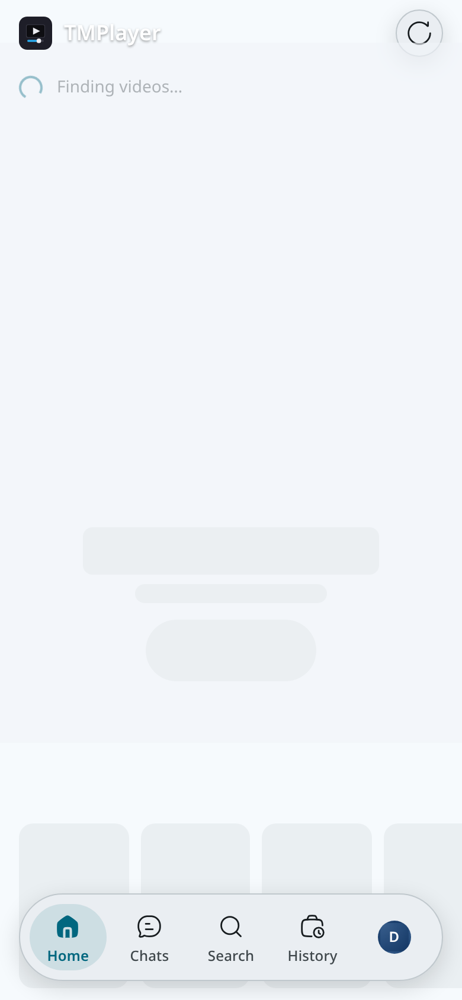
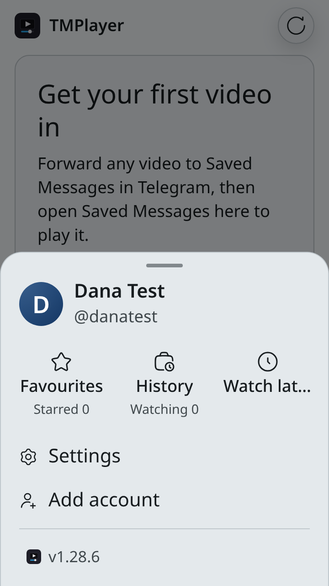
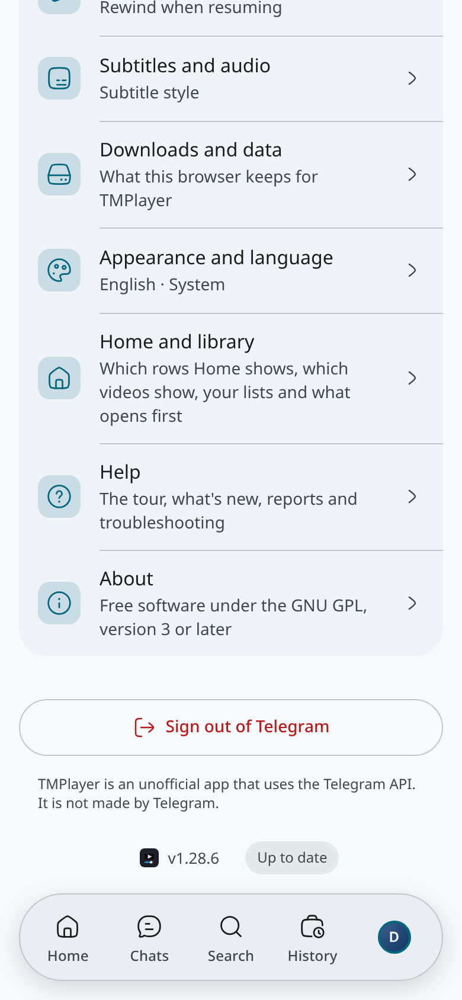
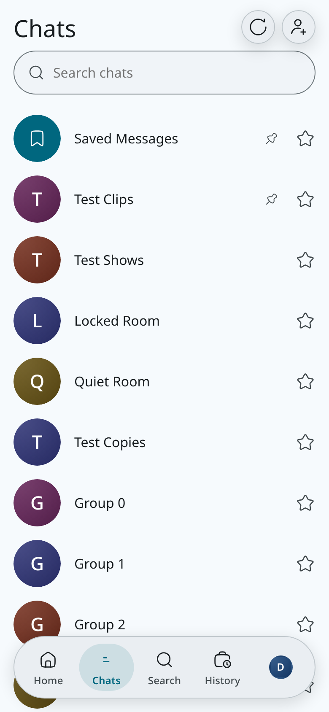

Made by SHOTS=1 playwright test e2e/nav-sheet.spec.ts (webapp). The bar keeps its five places; the account is the last item, avatar only (name in its label and tooltip).

390 x 844, the bar390 x 844, the account sheet

360 x 640, text at 130 percent

390 x 844, Settings foot

390 x 844, a route change in flight: the avatar stays